방송통신기능사 (2001-01-21 기출문제)
1과목: 임의 구분
1. 다음 회로의 A, B 사이의 합성 저항은?
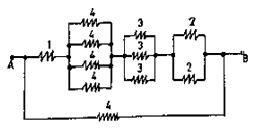
- 4 [Ω]
- 3 [Ω]
- 2 [Ω]
- 1 [Ω]
(정답률: 알수없음)

2. 100[V] , 100[W]의 전구를 80[V]에 사용하였을 때 그때 소비되는 전력은 얼마인가?
- 100[W]
- 80[W]
- 64[W]
- 40[W]
(정답률: 알수없음)
3. 같은 사인과 교류에서 평균값은 실효값의 몇 배가 되는가?
- 0.9
- √2
- 1.11
- 2/π
(정답률: 알수없음)
4. 사인과 교류를 식으로 나타낼 때 필요 없는 변수는?
- 평균전력
- 전류의 최대값
- 주파수
- 위상각
(정답률: 알수없음)
5. 코일에 교류전압 100[V]를 가했을 때 10[A]의 전류가 흘렀다면 코일의 리액턴스[XL]는?
- 6[Ω]
- 8[Ω]
- 10[Ω]
- 12[Ω]
(정답률: 알수없음)
6. 비오-사바아르의 법칙은?
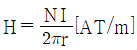
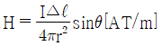
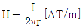
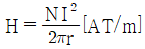
(정답률: 알수없음)
7. 그림과 같은 직사각형의 코일에 아주 큰 전류를 흐르게 하면 코일의 모양은 어떻게 변하겠는가?
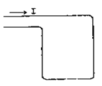
- 그대로 있다.
- 원모양으로 된다.
- 정사각형 모양으로 된다.
- 불규칙으로 운동하는 모양이 된다.
(정답률: 알수없음)
8. 다음 물질중 온도 상승과 더불어 고유저항치가 떨어지는 (부온도특성)물질은 어떤 것인가?
- W(텅스텐)
- Al(알미늄)
- Si(실리콘)
- Au(금)
(정답률: 알수없음)
9. 트랜지스터 증폭회로에서 출력 임피던스 값의 결정은?
- 클수록 좋다.
- 출력측 부하에 따라 변한다.
- 항상 저항성이다.
- 출력측 부하에 관계없이 일정하다.
(정답률: 알수없음)
10. 반송파의 진폭을 신호파에 따라 변화시키는 것은?
- 펄스 변조
- 위상 변조
- 평형 변조
- 진폭 변조
(정답률: 알수없음)
11. 다음의 회로를 정리하여 기호로 변환시키면 다음 중 어느 것인가?
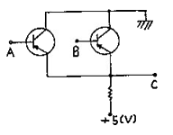
- AND
- OR
- NOR
- NAND
(정답률: 알수없음)
12. FET에서 핀치 오프(pinch off) 전압이란?
- 공핍층이 넓어져 채널을 가로막은 상태의 게이트 역방향 전압
- 베이스와 이미터 사이의 전압
- 드레인과 소스사이의 최초 전압
- 오프셋 전압을 의미한다.
(정답률: 알수없음)
13. 다음 회로가 하틀리 발진회로인 경우에 알맞은 것은?
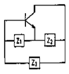
- Z1:C , Z2:C , Z3:L
- Z1:C , Z2:C , Z3:C
- Z1:L , Z2:L , Z3:L
- Z1:L , Z2:L , Z3:C
(정답률: 알수없음)
14. 발진회로에서 분주회로를 사용하게 되는 경우 분주회로의 역할은?
- 발진신호의 주파수를 높임
- 발진신호의 주파수를 낮춤
- 발진신호의 다른 신호를 더함
- 발진신호의 다른 신호를 곱함
(정답률: 알수없음)
15. 변조도가 1인 경우를 무엇이라고 하는가?
- 무변조
- 100[%]변조
- 변조도 얕음
- 과변조
(정답률: 알수없음)
16. 프로그램(program) 작성시 필요한 작성도(Flow-chart)에서 process를 나타내는 기호는?
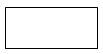
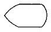
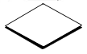
(정답률: 알수없음)
17. 시스템 프로그램에 포함되지 않는 것은?
- 번역 프로그램
- 제어 프로그램
- 서비스 프로그램
- 응용 프로그램
(정답률: 알수없음)
18. 과학 계산용으로 주로 쓰이는 언어는?
- ASSEMBLER
- PL/I
- FORTMAN
- COBOL
(정답률: 알수없음)
19. 중앙처리장치(CPU)를 크게 두 부분으로 분류하면 어느 것인가?
- 제어장치와 기억장치
- 산술장치와 연산장치
- 연산장치와 제어장치
- 연산장치와 논리장치
(정답률: 알수없음)
20. 정보의 단위인 워드(WORD), 바이트(BYTE), 비트(Bit) 및 필드(Field)의 크기순서가 맞는 것은?
- 비트＜ 필드＜ 바이트＜ 워드
- 비트＜ 워드＜ 필드＜ 바이트
- 비트＜ 바이트＜ 필드＜ 워드
- 비트＜ 바이트＜ 워드＜ 필드
(정답률: 알수없음)
2과목: 임의 구분
21. 컴퓨터의 보조기억 장치가 아닌 것은?
- 자기드럼
- 자기테이프
- 캐시 메모리
- 자기디스크
(정답률: 알수없음)
22. 논리곱을 나타내는 심볼로 옳게 표시한 것은?
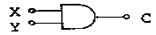
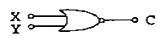
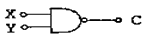
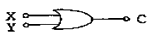
(정답률: 알수없음)
23. 반가산기에서 입력 A = 1이고, B = 1출력 합(S)과 올림수(C)는 얼마인가?
- S = 1, C = 1
- S = 0, C = 1
- S = 1, C = 0
- S = 0, C = 0
(정답률: 알수없음)
24. 컴퓨터가 취급하는 데이터의 형태나 표현하는 방법에 따라 분류한 컴퓨터가 아닌 것은?
- 하이브리드 컴퓨터
- 아날로그 컴퓨터
- 범용 컴퓨터
- 디지털 컴퓨터
(정답률: 알수없음)
25. 1/0 장치와 주기억장치를 연결하는 중계역할을 담당하는 부분은?
- device
- bus
- channel
- interrupt
(정답률: 알수없음)
26. 그림은 잡음측정 회로이다. 레벨미터의 지시값이 M[dB], 보조증폭기의 증폭도를 G[dB], 필터의 통과대역내에서의 감쇠량을 b[dB]라고 하면 잡음량 N[dB]은?
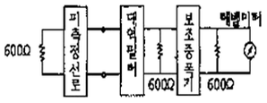
- N = M + G + b[dB]
- N = M + G - b[dB]
- N = M - G + b[dB]
- N = M - G - b[dB]
(정답률: 알수없음)
27. 수신측 개방 임피던스가 200[Ω]이고, 단락 임피던스가 800[Ω]일 때, 특성 임피던스 Z0 는?
- 250[Ω]
- 400[Ω]
- 350[Ω]
- 500[Ω]
(정답률: 알수없음)
28. 방송수신용 공중선의 성능과 관계가 없는 것은?
- 이득이 클 것
- 지향성이 예민할 것
- 정합이 충분할 것
- 실효 복사전력이 클 것
(정답률: 알수없음)
29. 헤드 엔드(Head End)로부터 송출된 신호를 서비스 구역 전역에 전송하기 위한 전송로 부분이 아닌 것은?
- 인입선
- 간선
- 분배선
- 분기선
(정답률: 알수없음)
30. 방송국에서 사용하는 VTR의 종류에 포함되지 않는 것은?
- U – Matic
- β- CAM
- VHS
- ENG
(정답률: 알수없음)
31. 다음 중 CATV의 효시라고 볼 수 있는 것은?
- CCTV
- HDTV
- MATV
- ITV
(정답률: 알수없음)
32. CATV에 대한 설명으로 맞지 않는 것은?
- 초기 케이블TV는 난시청 해소를 목적으로 하였다.
- 케이블을 통한 다채널 전송이 가능하다.
- 우리나라는 방송국운영자, 프로그램공급자, 전송망 사업자로 구분된다.
- 쌍방향기능은 실현할 수 없다.
(정답률: 알수없음)
33. 음성송출방식에서 스테레오와 음성다중을 송출하는 방식은?
- BTSC방식
- VITS방식
- MTS방식
- Two-Carrier방식
(정답률: 알수없음)
34. 전압 1[V]를 [dB㎶]로 환산하면?
- 30
- 60
- 90
- 120
(정답률: 알수없음)
35. 종합유선방송국(SO)의 기능을 잘못 설명한 것은?
- 지상파 텔레비전 방송의 재수신
- 지역 자체방송
- 전송선로 시설설치운용
- 공급받은 프로그램에 의한 기본서비스
(정답률: 알수없음)
36. 방송의 디지털화 이점이라고 볼 수 없는 것은?
- 한정된 주파수 자원의 이용 효율의 증가
- 통신과 방송의 융합에 의한 방송 서비스의 고도화
- 방송프로그램의 제작 코스트 절감
- 고도의 압축부호화 기술로 전문 방송채널의 축소화
(정답률: 알수없음)
37. CATV 방송의 특성에 관한 정의에 해당되지 않는 것은?
- CATV 방송은 영상, 음성, 음향을 송신하는 방송이다.
- CATV 방송은 유선통신시설을 이용하여 수신자에게 송신하는 유선방송이다.
- CATV 방송은 채널별 종합편성을 하여 불특정 다수에게 전송하는 방송이다.
- CATV 방송은 다채널의 유선전문방송이다.
(정답률: 알수없음)
38. 누화, 잡음, 왜곡 등의 발생율이 낮고 전송특성의 질이 저하된 선로에서 다중화를 도모할 수 있는 가장 이상적인 전송방식은?
- AM 주파수분할 다중전송방식
- FM 주파수분할 다중전송방식
- PCM 시분할 다중전송방식
- PM 주파수분할 다중전송방식
(정답률: 알수없음)
39. 전송량의 단위를 [dB]로 사용시 장점이 아닌 것은?
- 대수비를 채택하면 계산이 간단해진다.
- 일정한 규약을 결정해두면 단위사용이 편리하다.
- 사람의 실제감각이 대수비와 비슷하다.
- 자연대수를 사용하므로 이론계산이 쉽다.
(정답률: 알수없음)
40. 연장 증폭기는 어디에 사용되는가?
- 분배선로나 소규모 네트웍에서 케이블의 손실을 보상하여 전송로를 연장시켜 주는 곳
- 간선에 위치하여 신호의 손실을 보상하고 AGC 기능이 필요한 곳
- 간선을 2개 이상의 지선으로 분배하여 신호의 손실을 보상하는 곳
- 간선으로부터 가입자에게 분기되는 곳
(정답률: 알수없음)
3과목: 임의 구분
41. 같은 TV 신호가 다른 시간대에 TV 수상기에 수신되어 발생하는 다중상 현상을 무엇이라고 하는가?
- 스노우(Snow)현상
- 고스트(Ghosts)현상
- 교차 변조(Beats)현상
- 이중상(Double Image)현상
(정답률: 알수없음)
42. 방송채널 중 1개 이상의 TV 신호수신을 목적으로 하는 수신안테나를 무엇이라 하는가?
- 채널 전용 안테나
- 협대역 안테나
- 고주파대역 안테나
- 광대역 안테나
(정답률: 알수없음)
43. 다음 중 스튜디오 설비의 장치에 해당되지 않는 것은?
- 안테나 장치
- 편집 및 송출장치
- 조정실 장치
- ENG 카메라 및 중계장치
(정답률: 알수없음)
44. 다음 중 수신기 내에 TV 신호를 정확히 수신하기 위하여 필요한 장치는?
- 정현파회로
- 동기회로
- 등가회로
- 컨버터
(정답률: 알수없음)
45. 칼라 TV에서 전송하지 않는 신호는?
- Y
- I
- Q
- T
(정답률: 알수없음)
46. 다음 중 방송법의 궁극적이 목적에 해당하는 것은?
- 방송의 효율적인 역무제공
- 방송의 종합적인 관리
- 시청자의 능률적인 편의 도모
- 국민 문화의 향상과 공공 복리의 증진
(정답률: 알수없음)
47. 방송시설로부터 시설외부로 누출되는 전자파를 무엇이라고 부르는가?
- 반송전자파
- 누설전자파
- 방해전자파
- 와류전자파
(정답률: 알수없음)
48. 방송사업자가 방송구역의 변경으로 승인을 받고자 한다. 이 때 누구의 승인을 받아야 하는가?
- 도지사
- 특별시 또는 광역시장
- 문화관광부장관
- 정보통신부장관
(정답률: 알수없음)
49. 다음 중 방송위원회의 위원이 될 수 있는 자는?
- 국무위원
- 정당원
- 방송국장
- 대학교수
(정답률: 알수없음)
50. 방송설비의 경우 상용전원 정전시에 대비하여 갖추어야 할 예비 전원 설비의 용량은 최저 몇 시간 이상 공급할 수 있도록 하여야 하는가?
- 최저 1시간 이상
- 최저 3시간 이상
- 최저 5시간 이상
- 최저 10시간 이상
(정답률: 알수없음)
51. 다음 중 표준방송 주파수대에 해당하는 것은?
- 285[KHz]-526.5[KHz]
- 526.5[KHz]-1606.5[KHz]
- 4000[KHz]-6100[KHz]
- 1606.5[KHz]-4000[KHz]
(정답률: 알수없음)
52. 전기통신설비에 관한 기술기준의 정의에서 정하고 있는 저주파수의 범위는?
- 300[Hz] 미만
- 300-400[Hz]
- 3400-5000[Hz]
- 1000[Hz] 이하
(정답률: 알수없음)
53. 정보통신공사업에 관한 설명으로 적합하지 않은 것은?
- 허가는 정보통신부장관에게 받아야 한다.
- 공사의 설계는 용역업자에게 발주하여야 한다.
- 공사의 감리는 용역업자에게 발주하여야 한다.
- 공사는 공사업자에게 도급하여야 한다.
(정답률: 알수없음)
54. 방송의 질적 수준을 평가하는 항목과 관계가 없는 것은?
- 신호레벨
- 채널간 반송파의 레벨차
- 혼변조도
- 신호대 잡음대(S/N비)
(정답률: 알수없음)
55. 종합유선방송사업의 허가 및 승인의 유효기간은?
- 1년
- 2년
- 3년
- 4년
(정답률: 알수없음)
56. 입력신호를 간선에서 지선으로 나누어주는 소자는?
- 단말기
- 보호기
- 분기기
- 변조기
(정답률: 알수없음)
57. 방송국의 표준방송용 송신장치의 변조도[%]는 얼마인가?
- 10
- 50
- 75
- 95
(정답률: 알수없음)
58. 방송사업자, 종합유선방송사업자, 음악유선방송 사업자가 시청자와의 계약에 의하여 채널별 또는 방송 프로그램별로 그 대가를 받고 제공하는 것은?
- 협찬방송
- 전문방송
- 유료방송
- 광고방송
(정답률: 알수없음)
59. 다음 중 중계유선방송사업, 음악유선방송사업을 할 수 있는 자는?
- 외국인 또는 외국의 정부와 단체
- 미성연자 또는 한정치정자
- 파산선고를 받은 자로서 복권되지 아니한 자
- 중계유선방송사업, 음악유선방송사업의 허가 또는 등록이 취소된 후 3년이 경과된 자
(정답률: 알수없음)
60. 과징금 부가의 납부 기간은?
- 10일 이냐
- 20일 이내
- 15일 이내
- 30일 이내
(정답률: 알수없음)